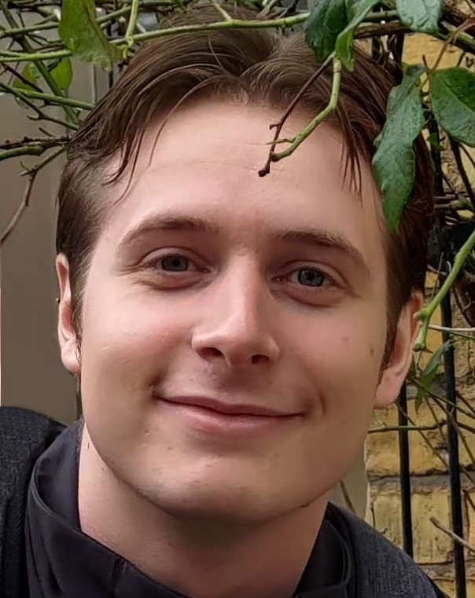
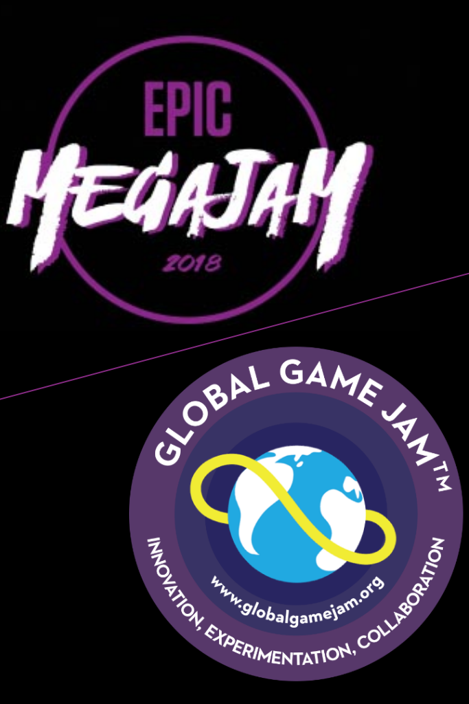

About

I love developing, and have experience in varying subjects, such as VR, networking, inverse kinematics, writing math libraries and much, much more. I excel at
creating features reliably and quickly in collaboration with a large team of designers and artists. Here are some of my preferred tools:
Unreal Engine 4
5 Years

C++11/14/17
3 Years

GitHub
2 Years

Perforce
3 Years

Godot
1 Year

Projects
Below are a few of the projects that I have worked on over the last few years, click on any of them to see my role and more details.
I'm best at working in Unreal Engine 4 or Godot for developing games. Then again, I'm a quick study and have worked in large codebases and custom engines,
so picking up a new/different engine won't take me long.
For code snippets and an overview of projects outside of my education, here is the link to My GitHub.
Bioside
(UE4 VR Shooter)

TiFrame
(C++ Game Framework)

BaBooms
(UE4 Multiplayer)

Shattered Lights
(UE4 VR Horror)
Game Jams!
(all sorts)
